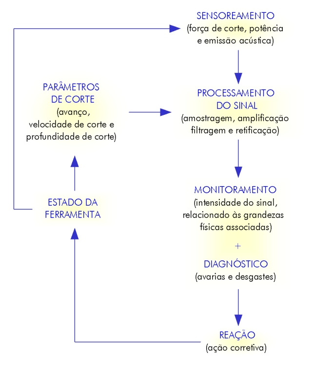

LMP>Linhas de Pesquisa>SIMAP>Diagnóstico de Avarias em Ferramentas de Corte via Multisensores
INTRODUÇÃOA tendência atual de produtividade está associada à máxima produção com o menor custo agregado, envolvendo a mínima participação humana. Isto requer sistemas altamente confiáveis. Além disso, o surgimento de novos materiais de difícil usinagem, e de novos e caros materiais de ferramentas, exige uma otimização completa do processo de torneamento. Não se admite mais que trocas de ferramentas sejam feitas antes do momento adequado, gerando gastos com ferramentas e tempos de máquinas paradas. OBJETIVOSDentro deste contexto, propõe-se um sistema de monitoramento via multisensores, com o intuito de se reconhecer e diagnosticar o estado da ferramenta de corte ao longo de sua vida na usinagem de metais em um torno CNC, a partir de um algoritmo do sinal resultante na saída do sistema. DESENVOLVIMENTO DA PESQUISAO estado da ferramenta de corte está ligado a um grande número
de parâmetros, relacionados com o material usinado, o tipo de ferramenta,
as condições do processo, etc. Estes parâmetros podem
ser detectados através de sensores que, posicionados em locais estratégicos
da máquina, quantificam as avarias indiretamente pelos sinais de força
de corte, emissão acústica, e/ou potência gerados no
processo de torneamento. Os sinais obtidos pelos diferentes sensores são
medidos, tratados (amplificação, filtragem, etc.), combinados
e analisados (algoritmos de
Abaixo, a representação do sistema:  |
| Contato: SIMAP Walter Lindolfo Weingaertner Prof. Dr.-Ing |
Última Atualização 21.06.2006 |